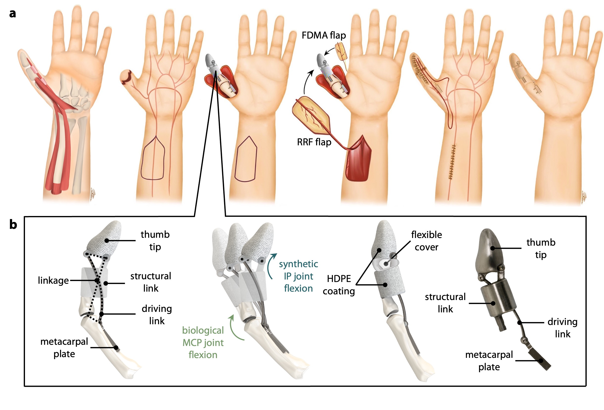
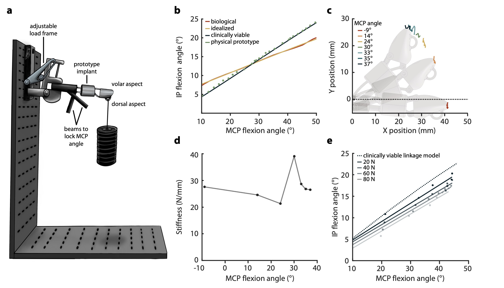
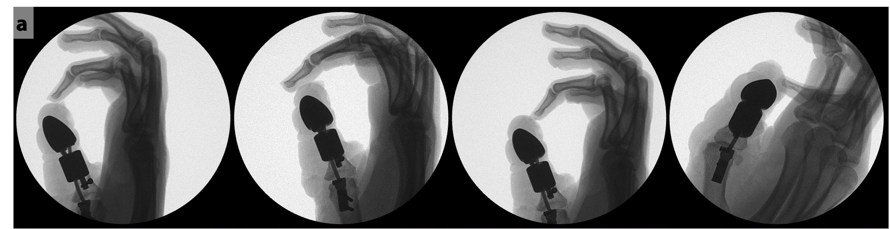
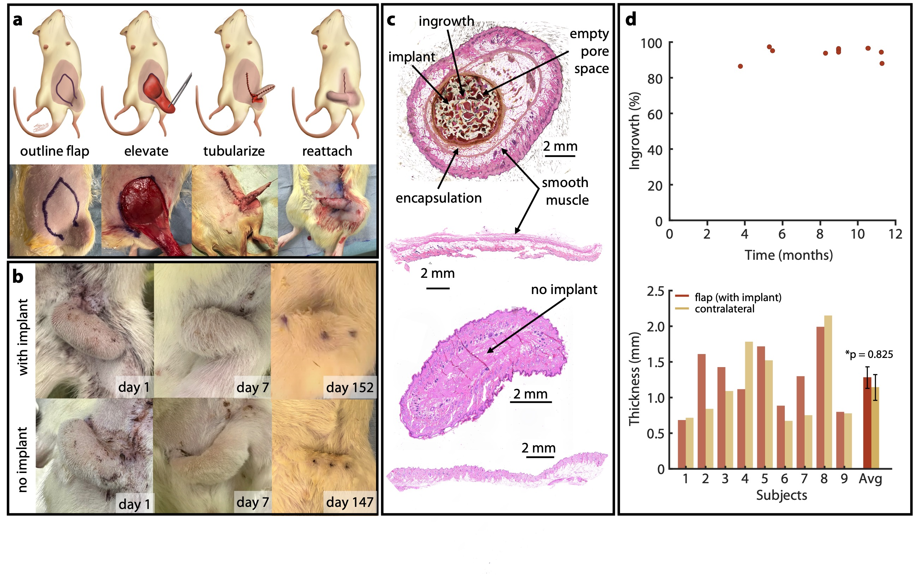

Overview
Thumb amputation at or proximal to the interphalangeal joint eliminates the ability to perform opposition pinch — the most critical hand function for daily tasks. Existing prosthetic solutions lack the anatomical integration needed for natural, skin-covered restoration of both function and sensation.
We developed an implantable biosynthetic thumb prosthesis using a 4-bar mechanical linkage system encased in a biologically integrated, skin-prelaminated construct, designed to replicate natural thumb kinematics.

Design & Methods
The prosthesis employs a 4-bar linkage mechanism optimized in MATLAB to achieve anatomically accurate angle coupling between the metacarpophalangeal and interphalangeal joints. The device was designed in SolidWorks and validated using finite element analysis (FEA) prior to fabrication.
Kinematics were validated using a Vicon motion capture system, and biomechanical load testing confirmed functional opposition pinch performance under physiologically relevant loads.

Validation
Surgical feasibility was validated through ex vivo cadaveric studies, working directly with surgeons to assess clinical function and refine design for operating room requirements. In vivo animal studies with long-term follow-up assessed biocompatibility using histological analysis (H&E staining and ImageJ quantification).

4-bar
Linkage mechanism
2025
Published
npj
Biomedical Innovation
Publication
S. Bansal, G. V. Lai, M. Belingheri, A. Q. Kashay, J. Kim, A. Tomkinson, S. Herman, K. Bollavaram, B. K. Zukotynski, N. S. Jain, K. K. Azari, L. E. Wessel, T. R. Clites. "A biosynthetic thumb prosthesis." npj Biomedical Innovation 2, 22 (2025).
Download Paper →Podium Presentation · Orthopaedic Research Society Annual Meeting · Long Beach CA · Feb 2024
Poster · Southern California Robotics Symposium · Irvine CA · Sept 2023